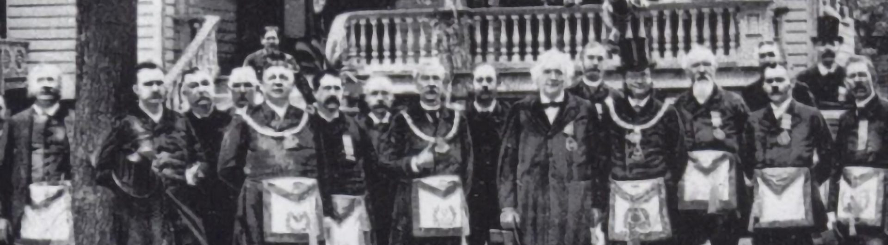
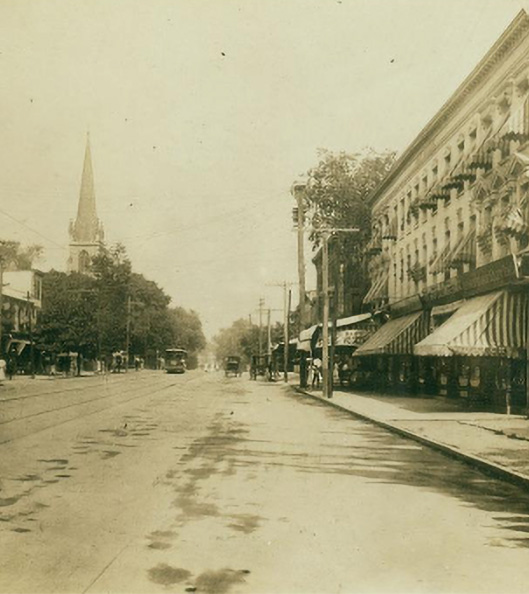
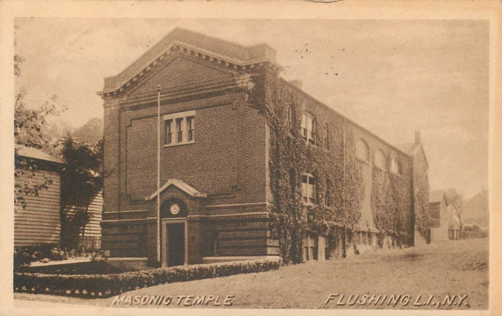

The Founding
Cornucopia Lodge was chartered on June 14, 1865, in the aftermath of the Civil War. A group of dedicated Masons in Flushing sought to establish a lodge that would serve the growing community and uphold the timeless principles of Freemasonry.
The lodge received its charter from the Grand Lodge of Free and Accepted Masons of the State of New York, beginning a legacy that continues to this day.

Growth & Prosperity
As Flushing grew from a quiet village into a bustling Queens neighborhood, so too did Cornucopia Lodge flourish. The lodge became a center for community activity, hosting events and supporting local charitable causes.
During this period, the lodge moved to its current location at the Flushing Masonic Hall on Northern Boulevard, where we continue to meet today.

Service & Sacrifice
Through both World Wars, Cornucopia Lodge members answered the call to serve their country. Many brothers enlisted and fought overseas, while those who remained supported the war effort at home.
The lodge maintained its meetings throughout these difficult times, providing a beacon of stability and brotherhood for the community.

Continuing the Legacy
Today, Cornucopia Lodge #563 continues to thrive in the diverse and dynamic community of Flushing. We remain committed to the principles that guided our founders: brotherly love, relief, and truth.
Our lodge welcomes men from all walks of life who seek to improve themselves and contribute to their community through the practice of Masonic values.
